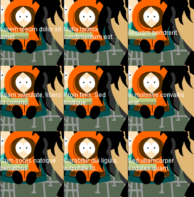
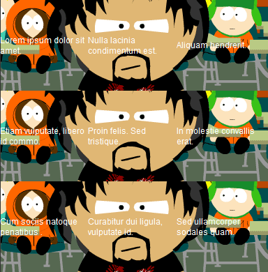

Tablo satırına ardalan resmi tanımladığımızda Firefox ve Opera'da sorun yok iken Internet Explorer ve Webkit tabanlı tarayıcılarda(Safari ve Google Chrome) sorun çıkarıyor. Biz burada Internet Explorer için nasıl bir çözüm üretebiliriz onu göstereceğiz. Webkit tabanlı tarayıcılar için çözüm bulamadım üzgünüm. [sourcecode language="css"] table tr{ background:url(images/southpark.gif) 0 0 no-repeat; height:130px; } [/sourcecode]

Örneği görmek için tıklayınız. tanımlaması Firefox ve Opera da sorunsuz çalışırken IE ve Webkit tabanlı tarayıcılarda sorun çıkaracaktır. Çözüm için [sourcecode language="css"] table tr{ background:url(images/southpark.gif) 0 0 no-repeat; height:130px; position:relative; } table tr td{ color:#fff; font:12px Arial, Helvetica, sans-serif; background:none; } [/sourcecode]

tanımlamaları yeterlidir. Örneği görmek için tıklayınız.
Comments !